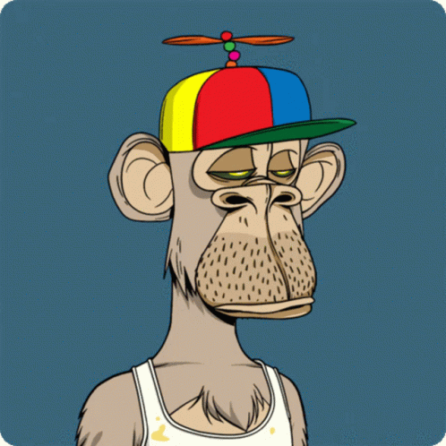

Wellcome To The Bored NFT
Bored NFT is a collection of 10,000 unique NFTs, each with its own set of disinterested expressions, colors, and clothes. Like CryptoPunks, their value is designed to be based on scarcity. Among Bored NFT, some traits are rarer than others.
Get Collection
10,000 Unique NFTs
74,000 Customer
Buy With Bitcoin

Why is bored ape worth so much?
While each individual Ape is different, some are rarer than others. In fact, some traits, like golden fur and laser eyes, are so rare that less than one percent of all Apes have them. This, in turn, drives up the price of the Apes
What is the cheapest Bored Ape?
Right now, the cheapest-available Bored Ape NFT listed on a marketplace is priced at 93 ETH, or about $272,600. Yesterday, a utility and governance token called ApeCoin (APE) was released and granted free to owners of the NFTs, with Bored Ape owners able to claim 10,094 APE for each NFT owned.
Why are NFTs so expensive?
NFTs are valuable because they verify the authenticity of a non-fungible asset. This makes these assets unique and one of a kind. Picasso's paintings are non-fungible. While anyone can make copies of his paintings, the original painting remains irreplaceable and unique.